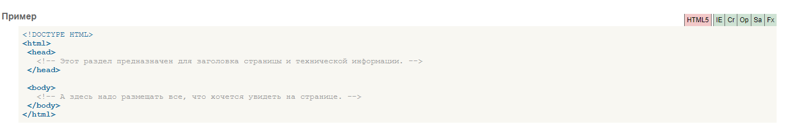

Вернуться на главную страницу
Описание
Тег
-style-
Применяется для определения стилей элементов веб-страницы. Тег -style- необходимо использовать внутри контейнера -head-. Можно задавать более чем один тег -style-.
